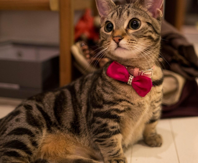
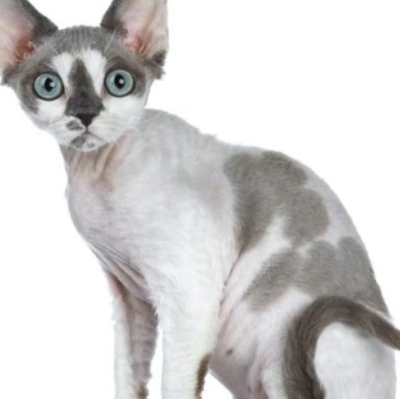
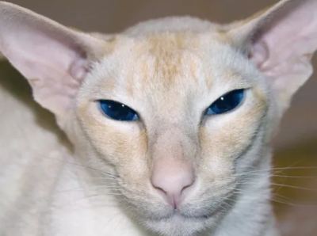
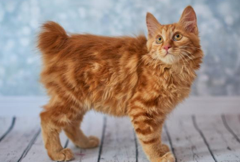
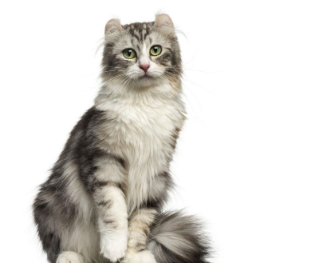

Raças
Nesta lista da MIAU-MIAU, você vai encontrar informações completas sobre a personalidade, saúde, comportamento e cuidados necessários das mais variadas raças de gatos.
Munchkin
O Munchkin é uma raça de gato recente, que costuma ser comparada com frequência aos cães da raça Basset Hound devido às suas patas curtas em relação à altura, uma das suas caraterísticas mais marcantes. Com uma aparência exótica, um caráter amável, dócil e inteligente, é impossível não se apaixonar por esta raça de gato.
Munchkin: Origem
Nem sempre o Munchkin foi considerado um gatinho super fofo. Na verdade, sua criação recebeu muitas críticas no início e ele até chegou a ser considerado uma aberração. A origem da raça é marcada por muitas controvérsias. Segundo a TICA (The International Cat Association), um médico veterinário britânico registrou em 1944 pelo menos quatro gerações de felinos com as pernas curtas e que eram considerados saudáveis. A linhagem desapareceu depois da segunda guerra mundial.
Ainda de acordo com a associação, os Munchkins que conhecemos hoje começaram a se estabelecer em 1983 em Louisiana, nos Estados Unidos, quando uma professora encontrou uma gata que tinha as pernas curtas e costas alongadas - e um detalhe importante é que ela estava prenha. A gatinha recebeu o nome de Blackberrye é considerada a “progenitora” da raça. Ela e um dos seus filhotes, chamado de Toulouse, foram cruzados com outros gatos domésticos e assim a raça foi se estabelecendo com as características que conhecemos do gato das pernas curtas hoje em dia.
O gato de pata curta foi aceito e registrado no programa de raças da TICA em 1994. A instituição monitora a criação e desenvolvimento de padrões genéticos de novas raças. A TICA ressalta que a reprodução dos gatos de pernas curtas segue os formatos de raças de cães que possuem características semelhantes, como o Dachshund e o Corgi. O felino ganhou o status de campeão em 2003.
CaracterísticasDevon Rex
Os gatos Devon Rex são lindos gatinhos que adoram passar horas e horas recebendo carinho e brincadeiras, são considerados gatos-cachorros porque seguem os tutores onde eles vão, as qualidades e características são conhecidas por todos os amantes de raças de gato-cachorro.
Devon Rex: Origem
Devon Rex surgiram nos anos 60 fruto do cruzamento entre um gato Selvagem chamado Kirlee, ele vivia em uma colonia perto de uma mina na cidade de Devon, daí o nome da raça. Se chama Devon Rex porque é igual aos coelhos Rex e aos Cornish Rex, pois tem uma pelagem encaracolada e por isso são considerados um dos gatos hipoalérgicos.
Inicialmente, devido a semelhança entre a pelagem, pensavam que os gatos Devon Rex e os Cornish Rex eram variações da mesma raça, no entanto essa possibilidade foi descartada depois de comprovar, em inúmeras ocasiões, que os filhotes do cruzamento de ambos tipos de gato sempre apresentavam pelo liso. Dessa forma, os investigadores puderam concluir que se tratava de uma raça de gatos totalmente diferente apesar de esteticamente parecidos.
Em 1972, a American Cat Fanciers Association (ACFA) estabeleceu um padrão para a raça Devon Rex, no entanto, a The Cat Fanciers Association (CFA) não fez o mesmo, apenas 10 anos depois especificamente em 1983.
CaracterísticasMinskin

Os gatos minskin são pequenos felinos de patas curtas e pouco ou nada de pelos que surgiram nos Estados Unidos há duas décadas como resultado do cruzamento entre gatos munchkin e sphynx. Atualmente são uma raça bastante desconhecida, já que existem poucos exemplares. São felinos alegres, carinhosos, brincalhões, sociáveis e leais que adoram a companhia de pessoas de qualquer idade, sempre que lhes ofereçam atividades e atenção. Mas também são um pouco delicados e necessitam de atenção e cuidados especiais para manter uma boa saúde e qualidade de vida.
Minskin: Origem
A raça de gato minskin é bastante recente, como mencionamos, somente possui duas décadas de antiguidade. O criador de Boston, Paul McSorley, decidiu criar um gato sem pelos com patas curtas aproximadamente no ano de 1998. Para isso cruzou um sphynx, que não possui pelos, com um gato munchkin, de patas curtas. Neste processo de criação também interferiram raças como o birmanês e o devon rex.
O primeiro gato desta raça, chamado Rory, nasceu no ano 2000. Pouco a pouco foram nascendo mais gatos minskin, alcançando os 50 exemplares no ano de 2005. Atualmente segue sendo considerado um gato muito raro de ser encontrado e a TICA o possui em seu programa de desenvolvimento de novas raças. É reconhecido como uma raça experimental pela Associação Internacional do Gato.
CaracteristicasColorpoint
O gato colorpoint é uma combinação entre gatos siameses e gatos de pelo curto como os british e american shorthair e os abissínio. O resultado é um gato de cores e padrões variados, sempre respeitando o colorpoint na ponta das orelhas, na cauda e nas patas, locais de menor temperatura corporal. Com relação à sua personalidade, são como os siameses, ou seja, muito expressivos, miam bastante, inteligentes, ativos e afetuosos, por isso necessitam de carinho e atenção diariamente. Sua saúde pode ser afetada por doenças congênitas comuns do siamês, como transtornos oculares, alergias ou doenças cardíacas
Colorpoint: Origem
O gato colorpoint é um felino que surgiu da combinação do gato siamês com outros gatos de pelo curto, especialmente o american shorthair ou americano de pelo curto. Como consequência, surgiu um gato com o padrão colorpoint do siamês, mas com cores de manto diferentes, não aceitos para o siamês, como o vermelho, o carey, o creme, o malhado e pequenas variações.
A origem desta raça é datada no ano de 1940, quando criadores de siameses estadunidenses e britânicos buscaram obter gatos parecidos, mas com cores diferentes das que comumente têm os siameses, que são o seal, o azul, o chocolate e o lilás point. Cruzaram a mistura entre seus siameses, abissínios e britânicos e americanos de pelo curto outra vez com siameses para conseguir estabelecer um padrão desejado.
A Associação Internacional Felina (CFA) os reconheceram como raça independente no ano de 1974, mas a Associação Internacional Felina (TICA) e a Associação Internacional de Criadores de Gatos (AFCA) os considera um tipo de gato siamês.
CaracteristicasBobtail Americano
A raça de gato bobtail americano apareceu espontaneamente devido a uma mutação genética dominante no Arizona, no final de 1960. Não está de forma alguma relacionada geneticamente com a raça bobtail japonês, embora se pareçam fisicamente, nem é o resultado da mistura com outra raça de cauda curta. Eles são gatos muito inteligentes, brincalhões, com capacidade de adaptação, enérgicos e carinhosos. Também são saudáveis e fortes.
Bobtail americano: Origem
O gato bobtail americano, como seu próprio nome sugere, vem do continente americano. Esteve presente no continente desde que o bobtail japonês começou a se reproduzir, mas só nos anos 60 do século passado é que começou a dar importância.
Vem de um cruzamento entre uma fêmea siamês seal point e um macho tigrado de cauda curta. Este macho foi adquirido por John e Brenda Sanders, de Iowa quando estavam de férias no Arizona, e é considerado um híbrido entre um gato doméstico e montês ou bobtail. Na ninhada que tiveram, todos os gatinhos apresentavam a cauda curta e viram a possibilidade de uma nova raça felina. Esses gatinhos foram cruzados com gatos birmaneses e himalaios.
Uma amiga dos Sanders escreveu o primeiro padrão no início dos anos 70 do século XX: o gato de cauda curta, pelo longo e rosto e patas brancas. No entanto, nos anos 80, os criadores tiveram dificuldades em relação a consanguinidade, tornando a linha consanguínea demais para ser utilizada. Por este motivo, acabaram aceitando um gato de todas as cores, que tenha aspecto de bobcat e de pelo longo ou curto.
Em 1989 foi reconhecida como raça felina e a partir de então começou a crescer em popularidade.
CaracteristicasAmerican Curl
O gato American Curl se destaca por suas orelhas e, embora seja uma raça relativamente jovem, é extremamente popular em seu país de origem, embora não tanto na Europa ou em outros continentes. Com orelhas curvadas e uma aparência doce, os "curls" são felinos afetuosos e sociáveis que amam a companhia de sua família.
American Curl: Origem
De aparecimento muito recente, o gato American Curl foi desenvolvido na Califórnia na década de 80. pois em 1981 dois criadores encontraram um gatinho com orelhas curvadas e decidiram adotá-lo. Na primeira ninhada, dois outros espécimes nasceram com essas orelhas características, sendo um deles de pelo curto e o outro de pelo longo.
Essa nova raça com orelhinhas características causaram um "furor", muitos foram os criadores e admiradores interessados em conseguir espécimes do gato American Curl. Devido à essa fama e à rápida expansão da raça ela logo foi reconhecida pelos órgãos oficiais, em 1991 a CFA reconheceu oficialmente e um pouco mais tarde, os padrões da raça foram publicados pela FIFE em 2002.
CaracteristicasSomali

Com muitas traços em comum com a raça de gato Abissínio, muitas vezes é considerado uma versão de pelo largo. No entanto, o Somali é muito mais do que isso, uma vez que é uma raça reconhecida, com umas virtudes, tais como a personalidade e inteligência, tem também um porte elegante e imponente, com uma pelagem linda que é um diferencial, se comparado com outras raças parecidas. Hoje em dia é muito popular e isso é consequência das características e por ser um excelente companheiro.
Gato Somali: origem
Foi na década de 50 do século passado quando a hibridização, feita por criadores dos Estados Unidos, Nova Zelândia, Austrália e Canadá, entre gatos Abissínios com gatos Siameses, Angoras e Persas surgiram alguns exemplares de pelo largo. No início, esses indivíduos de pelo maior que os congêneres eram desprezados e doados, já que para os criadores era mais interessante ter pedigree, no entanto, com o passar do tempo e a sucessão de cruzamentos, apareciam cada vez mais filhotes com essas características. Assim, nos anos 60, um criador canadense decidiu separar esses gatinhos de pelo largo e conseguiu constituir a raça. A criadora americana Evelyn Mague foi quem, em 1967, conseguiu criar de forma controlada.
Em 1979, quando se reconheceu pela primeira vez oficialmente a raça de gatos Somali, que foi denominada dessa forma porque provém dos gatos Abissínios, os quais são originários da Etiópia, país que faz fronteira com a Somália. O reconhecimento da raça foi feito pela Cat Fancier Association (CFA) e em seguida pela Fédération Internationale Féline (FIFe) em 1982.
Caracteristicas